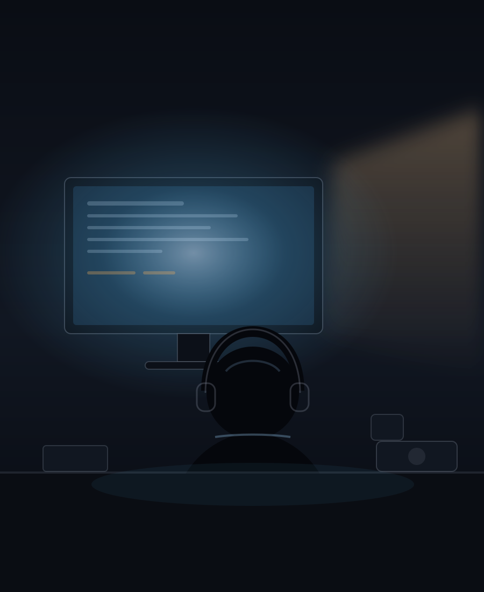

About · 薛子宏
一个正在成长中的人，不是一个已经完成的人
我叫薛子宏，在苏州读高三，性格比较典型的 INTP：好奇心重，喜欢研究原理，遇到问题会习惯性追问一句"为什么"。 不是那种只满足于"会用"的人，我更喜欢搞清楚它内部到底怎么工作、有没有更好的方案。
兴趣跨度挺大：数码产品、摄影、计算摄影、Hi-Fi、PC 硬件、系统与软件、AI、网络、视频后期、 Windows / Linux / Kali、前端、虚拟机、NAS、影像技术，还有交通与航空。 它们有一个共同点——都是"技术 + 实际体验"。我对单纯的参数表没什么兴趣。

- 名字
- 薛子宏
- 所在
- 江苏 · 苏州
- 学段
- 高三，正在准备高考
- 性格
- 偏 INTP，喜欢独立思考和拆解问题
- 学科
- 物理、化学、地理、数学
- 比赛
- 苏州市物理学科实验素质竞赛 二等奖
- 在用的
- Canon 1DX · Lumix G7 · DJI Action 4 · 自组主机
- 未来方向
- 计算机 · AI · 摄影与影像技术 · 软件 · 数字媒体
如果一定要用几个词概括：
顺带一提：这些词是我自己列的，不是 SEO 关键词。
我最近在想的一些问题
这些问题不一定有答案，但想一想挺有意思。
一台传感器并不大的手机，为什么能拍出看起来不错的照片？
多帧合成、夜景算法、AI 降噪、超分辨率……手机不是靠光学赢的，是靠算的。 那这套方法的天花板在哪里？它和传统相机的大底 + 光学系统，各自解决了什么问题？
旧硬件还有多少价值可以榨出来？
我折腾过服务器级 CPU、ECC 内存和魔改硬件。参数落后不代表没用， 关键看它放在什么场景里。这件事在预算有限的时候特别值得想清楚。
AI 能不能真的成为个人电脑上的助手？
不是"聊天"，而是能理解我在做什么、能安全地操作文件、能长期记住上下文。 目前它离这个目标还有一段距离，但方向已经能看出来了。
我买一个东西，到底是为了用，还是为了和别人比？
我对手机的兴致这几年一直在下降，因为很多升级对我来说没有实际意义。 相比之下，相机和耳机更容易让我感受到"技术本身"。我还在想这个区别是从哪来的。
这个网站是什么
它不是简历，也不是普通的个人主页，更不是一个数码评测站。它更像我的一间数字房间： 你可以进来看看我的照片、设备、做过的东西和想过的乱七八糟的问题，然后大概知道—— "哦，原来这是一个挺喜欢折腾东西的人。"
我不希望它看起来像模板生成出来的。所以这里没有满屏渐变、没有发光的巨大标题、没有到处乱放的图标， 也没有"欢迎来到我的数字世界"这种句子。大面积留白、干净的字级、少量但有效的动效， 以及一点点毛玻璃——这些是我自己看着舒服的样子。
照片和设备图目前都是我自己画的 SVG 占位图，因为卡里的原片还没来得及整理。 等整理完，它们会被换成真实拍摄的照片，每张都带当时的机身、镜头和参数。
粗略的折腾史
-
开始拆东西
遥控器、旧手机、坏掉的键盘。大部分拆完没装回去，但从此对"里面是什么"产生了长期兴趣。
-
第一台自己的电脑
装系统、分区、装驱动、把系统搞坏再重装。顺带学会了怎么在半夜悄悄下载东西不让家里人发现（不是好事）。
-
玩旧硬件、装 Linux、开始碰网络
洋垃圾平台、ECC 内存、超频、虚拟机、Kali。很多东西只是装上了，但至少我知道了它们大致是怎么回事。
-
认真开始拍照
从手机换到 M4/3，再摸到全画幅。开始研究焦段、景深、动态范围和视频编码，也开始自己剪片子。
-
AI 进入日常
从"用它写点东西"变成"在自己电脑上跑它"。同时开始认真面对高考，学着在兴趣和成绩之间分配时间。
-
准备高考，同时继续折腾
目标很简单：考上本科，并且不要在这个过程中把好奇心和动手能力丢掉。
我会折腾成功，也会折腾失败；会买到喜欢的东西，也会买完后悔；会认真学习，也会有状态不好的时候。
所以这个网站最重要的不是展示我有多厉害，而是记录一个高中生，如何在学习、摄影、数码、AI、技术和现实生活之间慢慢成长。 如果你也是这种人，欢迎随便看看——不用留言，也不用关注，看完觉得"这人挺能折腾"就够了。
本站为纯静态页面：手写 HTML / CSS / JavaScript，无框架、无构建、无追踪脚本、无外部字体请求。